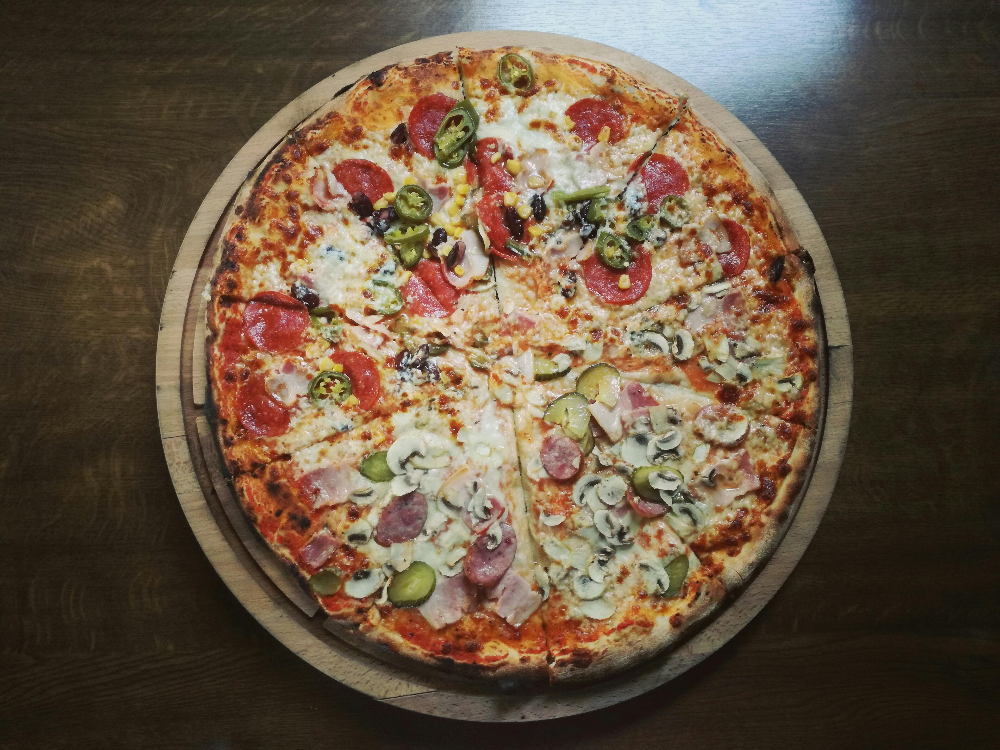
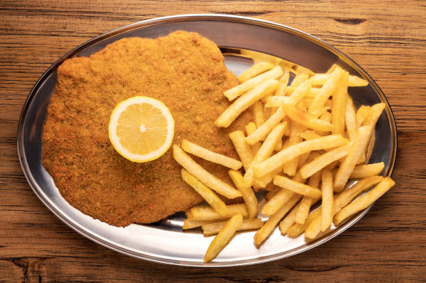
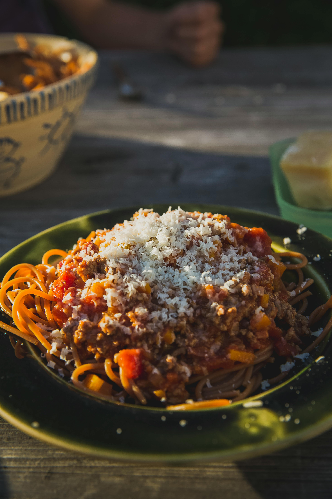

Sabores del Sur
Comida casera y artesanal
Pizza
Milanesa
Fideos
En Sabores del Sur cocinamos con pasión desde hace más de 20 años. Ofrecemos una experiencia gastronómica que combina recetas tradicionales argentinas con un ambiente cálido y familiar. Nuestra misión es que cada visita sea un encuentro con los auténticos sabores del sur de nuestro país.
Mariana G.
Excelente atención y comida deliciosa. Las empanadas son las mejores que probé en la ciudad. Sin duda, volveré.
Pablo R.
Un lugar muy cálido, ideal para ir con la familia. Los ravioles caseros son un clásico imperdible.
Lucía T.
Ambiente familiar, porciones abundantes y precios justos. Recomiendo la milanesa napolitana.